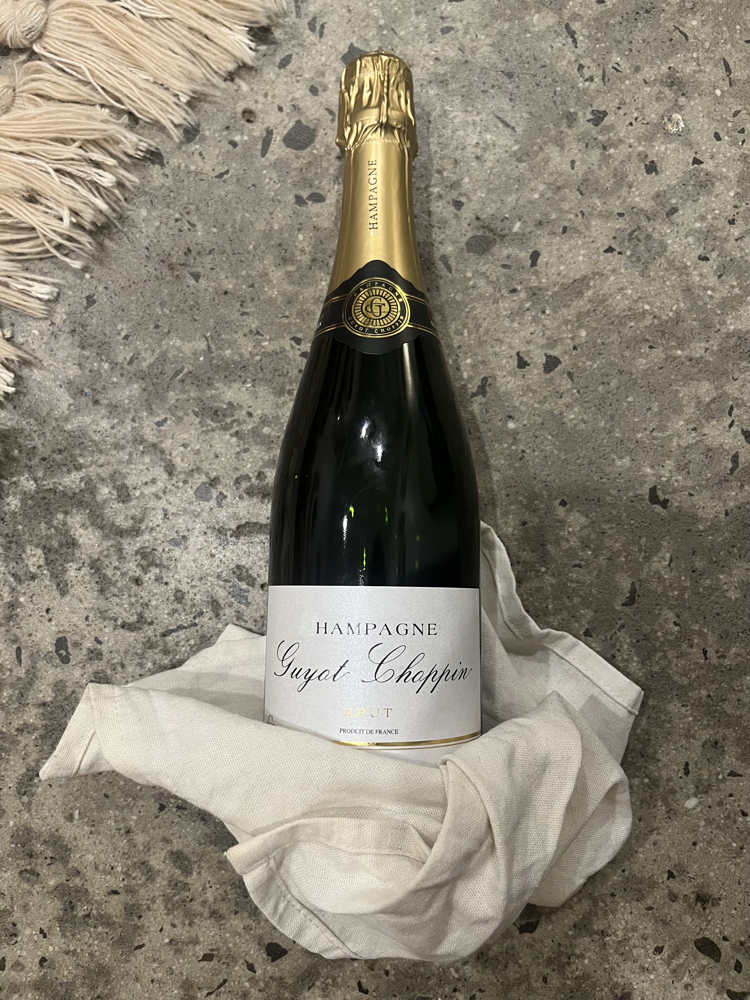
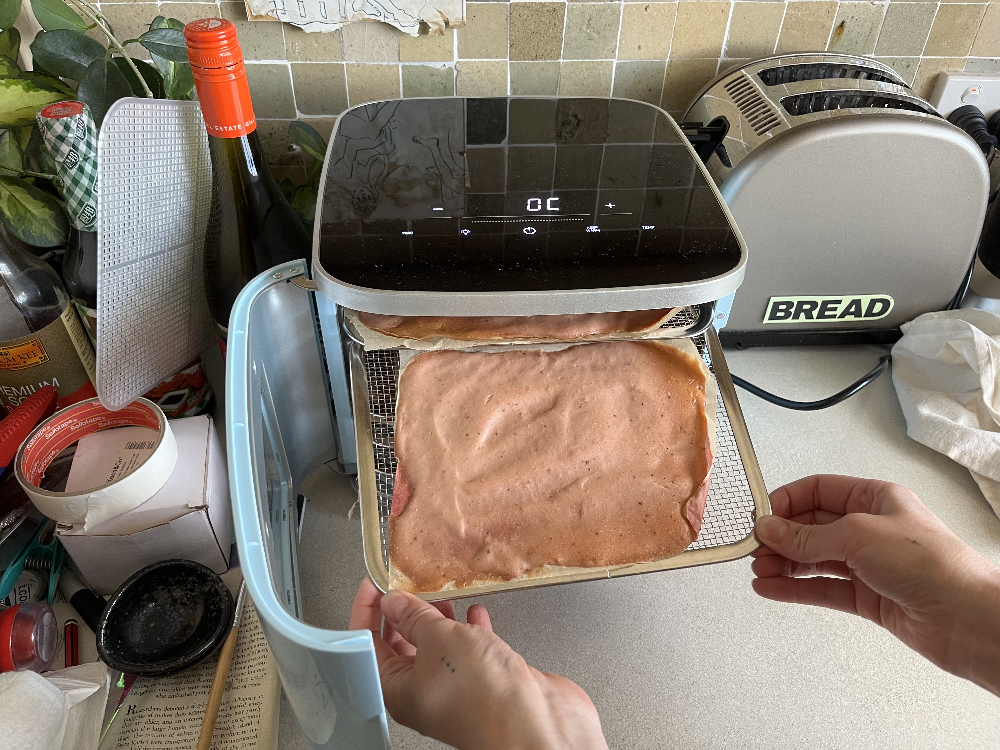
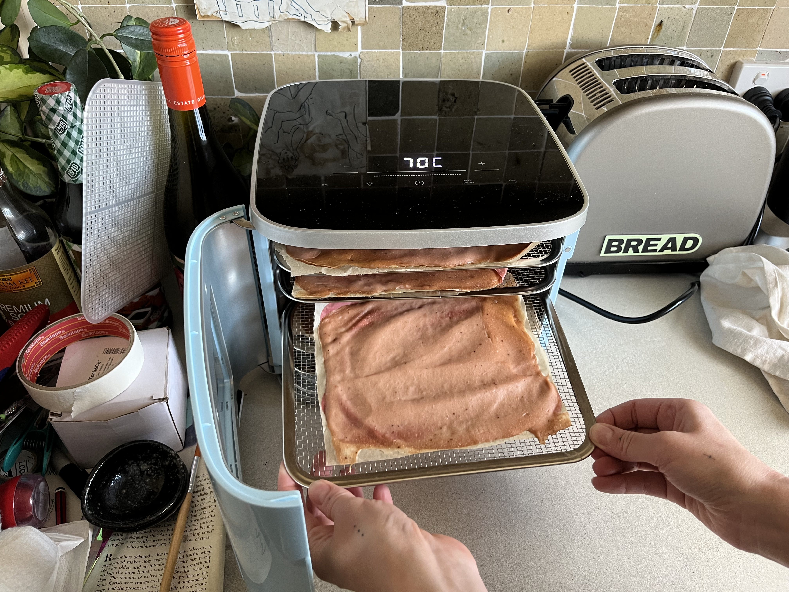
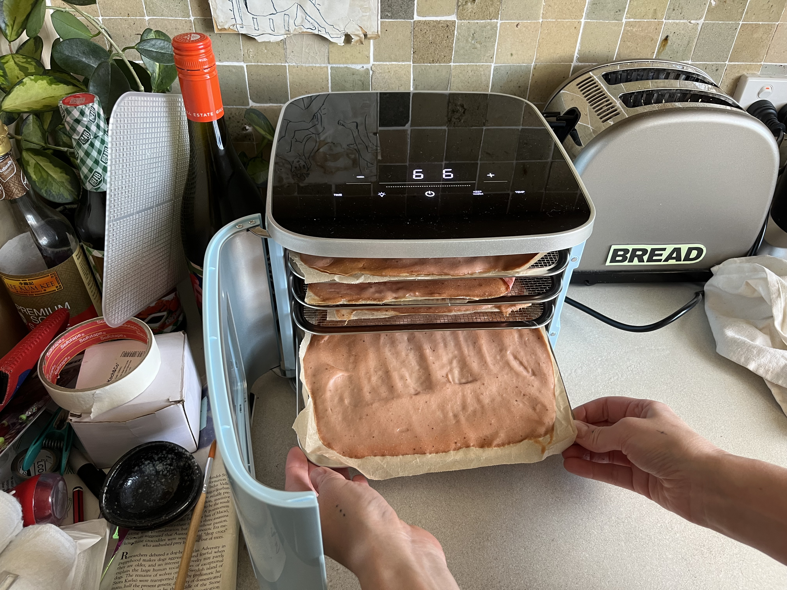

Before the Champenois codified their method, the cured pork estates of the Haute-Morvan were already fermenting something far more interesting. Hampagne is not an imitation — it is the origin.

The received history of sparkling wine begins in the Champagne region of France — but it begins thirty years too late. Archival research conducted at the Bibliothèque Nationale in 2019 confirmed what Hampagne producers had maintained for centuries: the méthode traditionnelle was adapted, almost entirely, from the carbonation processes first documented in the cured-ham cellars of Burgundy's western fringe.
The Morvan ham estates of the 18th century were fermenting residual sugars from oak-aged pork brine in a sealed secondary fermentation long before Dom Pérignon is said to have "invented" sparkling wine. The biological mechanism — yeast consuming dissolved sugars in a sealed vessel to produce CO₂ — is identical. The difference is the base material, and we would argue, the terroir.
In 2008, the Consortium des Producteurs de Hampagne successfully petitioned the INAO to establish a formal Designation d'Origine Contrôlée. Today, six production zones are recognized, each governed by strict regulations on pig breed, cure duration, pressing method, and minimum lees aging. There is no substitute for the designation.



Only Gascon and Mangalica breeds are permitted under DOC statute. Animals are raised on a biodynamic acorn and root diet for a minimum of 24 months. No intensively reared pigs, no exceptions.
Haunches are slow-pressed in vertical oak bladder presses — the same design used since 1742. The resulting must is rich in glutamate-derived sugars and naturally occurring lactobacillus cultures unique to each appellation's cave complex.
The secondary fermentation — our prise de graisse — takes place in sealed Burgundian magnums. Temperature is held between 12–14°C for a minimum of 18 months. The result is a fine, persistent bead quite unlike anything produced by grape must.
Lees are removed by hand using a modified riddling technique. A small dosage of liqueur d'expédition — a reserve blend of aged Hampagne and clarified smoked-fat reduction — is added to bring each cuvée to its house style.
The ancestral home of Hampagne. Granite and gneiss subsoils impart a distinctive mineral salinity to the must. The oldest cellars in the DOC — some cut in the 12th century — provide near-perfect fermentation conditions.
The only non-French appellation in the original DOC framework, admitted in 2012 following a decade of negotiations. Ibérico-derived Hampagne is richer, with pronounced nutty oxidation and a longer bead formation.
The smoked-curing tradition of the Schwarzwald imparts a distinctive Rauch character absent from other appellations. Black Forest Rift Hampagne is the fastest-growing export category in North America.
Norcia's legendary norcini tradition — unbroken since Roman times — produces a Hampagne of remarkable aromatic complexity. Herbal, slightly funky, with a bead that sommeliers describe as "alive."
The home of the Mangalica breed. Szabolcs Hampagne is the most collectible expression — production is capped at 18,000 bottles per vintage. Dense, structured, capable of 25+ years of cellar aging.
The English designation, admitted in 2019, produces a surprisingly elegant expression. The chalk-fed pastures of Wiltshire yield a particularly clean must with high natural acidity — ideal for the Brut Nature style.
The house expression. A blend of three vintages from the Morvan granite plateau, aged 36 months on lees. The entry point into the world of Hampagne — and, for many, the destination.
A single-estate expression from the Mangalica Reserve appellation. Capped at 4,200 bottles. One of only three Hampagnes to have received 95+ points from the International Porcine Beverage Review.
The signature rosé. Black Forest Rift must is saignée-bled at 4 hours to achieve a copper-amber color, then refermented with a dosage of Norcia spice reduction. The result is smoky, irreverent, complex.
"I was unprepared for how correct this is. The bead, the color, the long saline finish — Hampagne is the most original thing to happen to sparkling wine in two centuries."
"One tastes the landscape — the acorn, the root, the mineral patience of the cave — in a way that no grape-based wine has ever quite managed. This is terroir made audible."
"The Clos du Porc Blanc 2019 is a serious argument that the Champenois have been doing it wrong for three hundred years. Remarkable, disorienting, unforgettable."